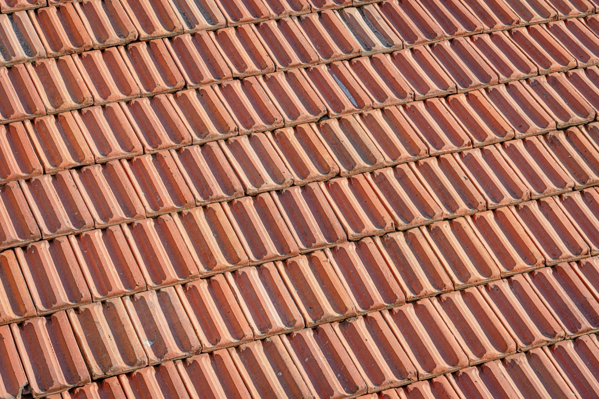

Clay & Concrete Tile Roofs
The classic colonial tropical roof — a ventilated layer of inert tiles that keeps heat out, never rusts or rots, and can outlive the mortgage. Beautiful and durable; the trade-off is weight.

Tile is the roof you picture on a Spanish colonial or Mediterranean home, and it earned that place in hot climates honestly. Curved clay (terracotta) or molded concrete tiles are laid in overlapping courses that create a ventilated air gap between tile and deck — a passive layer that carries heat away before it reaches the house. The tiles are inert (they don't rust, rot, or burn), and a well-built tile roof can last 50 to 100 years. The price you pay is weight.
How it's built
Tiles are hung or fixed in overlapping rows on battens over a waterproof underlayment and a structural deck. Clay tiles are fired terracotta (the classic barrel/mission and S-shapes); concrete tiles are cast from sand-cement and can mimic tile, slate, or wood shakes at lower cost. The overlaps shed water while the gaps ventilate; in hurricane zones, tiles are additionally clipped, screwed, or foam-set so wind can't lift them. Because tile is heavy, the roof structure must be engineered for the load from the start.
What does it cost?
Roughly $$–$$$: concrete tile is the value option at about $60–120/m² ($6–11/sq ft) installed; clay/terracotta runs higher, often $100–180/m². Add the cost of a beefier roof structure to carry the weight. But amortized over a 50–100-year life, tile is one of the cheapest roofs per year you can buy. (Approximate; tile type, profile, and structure drive it.)
The trade-offs at a glance
| Factor | Rating | Notes |
|---|---|---|
| Cost | 🟡 | Mid-to-high upfront; very low per year of life |
| Lifespan | 🟢 | 50–100 years — inert, doesn't rust or rot |
| Heat/UV | 🟢 | Ventilated air gap keeps interiors cool |
| Water shedding | 🟢 | Overlapping courses shed heavy rain |
| Hurricane/wind | 🟡 | Excellent if clipped/screwed; loose tiles can fly |
| Weight | 🔴 | Heavy — structure must be engineered for it |
| Lifespan value | 🟢 | Longest-lived common roof |
| Aesthetics | 🟢 | Timeless colonial/Mediterranean look |
| Permitting/finance | 🟢 | Standard and well understood |
Buildability — how hard is it to actually build?
Tile is a skilled professional install, and the single most important thing happens before any tile is laid: the roof structure has to be designed for the weight (a tile roof can weigh several times what a metal roof does). Get that right and the rest is craft — good underlayment, correct overlaps, and, crucially in the tropics, proper fastening so hurricane wind can't peel tiles off (loose tiles become projectiles). Tile is deeply familiar to builders across Latin America, permits easily, and once up, asks almost nothing of you for decades. For a permanent home where looks and longevity matter, it's hard to beat.
Planning a roof for a home in Panama or Costa Rica?
SORA is a fixed-price design-build platform for foreign buyers. We spec roofs for the tropics by default — heat, driving rain, salt air, and hurricane wind — and can walk you through the right material for your site and budget. See how the roof fits the whole build cost.
See real 2026 build costs →Frequently asked questions
How long does a tile roof last?
Clay (terracotta) and concrete tile are among the longest-lived roofs — commonly 50 to 100 years — because the tiles themselves are inert and don't rust, rot, or burn. The underlayment beneath may need replacing once in that span, but the tiles endure.
Do tile roofs keep a house cooler?
Yes — the overlapping tiles create a ventilated air gap above the deck that lets heat dissipate before it reaches the interior, and the tiles' thermal mass buffers temperature swings. It's one of the coolest-running roofs in a hot climate.
Are tile roofs safe in hurricanes?
Well-installed tile that is clipped, screwed, or foam-set performs well in high wind. The risk is loose or poorly fastened tiles, which can lift and become dangerous debris — so hurricane-zone tile roofs must follow high-wind fastening details, not just be laid loose.
Sources & verification
Figures in this guide were checked against primary and authoritative sources on 27 July 2026. Immigration, tax, and cost figures change — always confirm the current rules with the official body or a licensed professional before acting.
- Bob Vila — clay vs concrete tile roofing
- Forbes Home — tile roof cost & lifespan